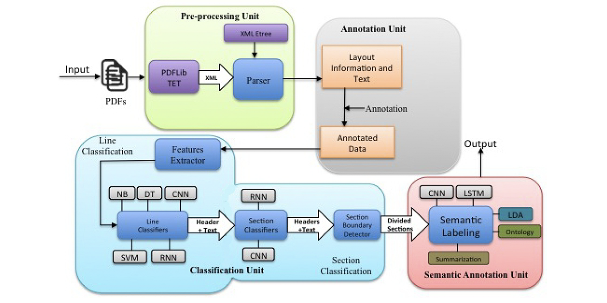
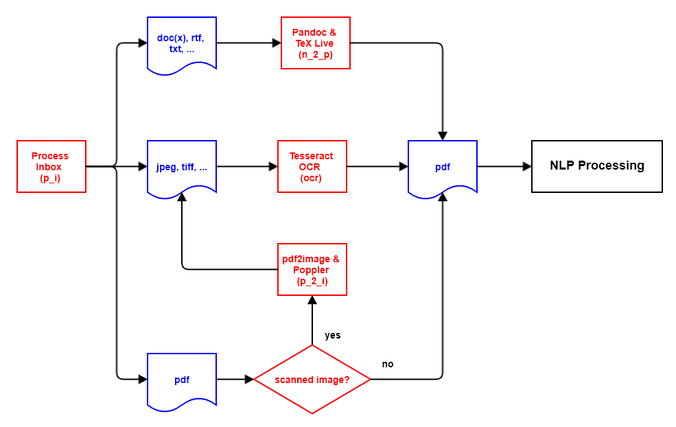
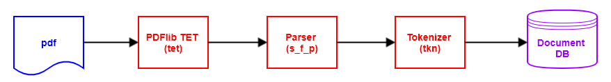

DCR - Document Content Recognition


1. Introduction
Based on the paper "Unfolding the Structure of a Document using Deep Learning" (Rahman and Finin, 2019), this software project attempts to use various software techniques to automatically recognise the structure in any pdf documents and thus make them more searchable.
The processing logic is as follows:
- New documents are made available in the file directory
inbox. If required, other language-related file directories can also be used (see section Document Language). - Documents in a file format accepted by DCR are registered and moved to the file directory
ìnbox_accepted. All other documents are registered and moved to the file directoryìnbox_rejected. - Documents not in
pdfformat are converted topdfformat using Pandoc and TeX Live. - Documents based on scanning which, therefore, do not contain text elements, are scanned and converted to
pdfformat using the Tesseract OCR software. This process applies to all image format files e.g.jpeg,tiffetc., as well as scanned images inpdfformat. - From all
pdfdocuments, the text and associated metadata is extracted into a document-specificxmlfile using PDFlib TET. - The document-specific
xmlfiles are then parsed and the DCR-relevant contents are written to theJSONfiles. - From the
JSONfile(s) spaCy extracts qualified tokens and stores them either in aJSONfile or in the database tabletoken.
1.1 Rahman & Finin Paper

1.2 Supported File Types
DCR can handle the following file types based on the file extension:
bmpbitmap image filecsvcomma-separated valuesdocxOffice Open XMLepube-book file formatgifGraphics Interchange FormathtmlHyperText Markup Languagejp2JPEG 2000jpegJoint Photographic Experts GroupodtOpen Document Format for Office ApplicationspdfPortable Document FormatpngPortable Network Graphicspnmportable any-map formatrstreStructuredText (RSTrtfRich Text FormattifTag Image File FormattiffTag Image File FormatwebpImage file format with lossless and lossy compression
2. Detailed Processing Actions
The documents to be processed are divided into individual steps, so-called actions.
Each action has the task of changing the state of a document by transforming an input file format into a different output file format.
The database tables run, document, and action document the current state of a document, as well as the actions performed so far.
If an error occurs during the processing of the document, this is recorded in the database tables document and action.
During the next run with the same action, the faulty documents are also processed again.
2.1 Preprocessor
2.1.1 Preprocessor Architecture

2.1.2 Process the inbox directory (action: p_i)
In the first action, the file directory inbox is checked for new document files.
An entry is created in the document database table for each new document, showing the current processing status of the document.
The association of document and language is managed via subdirectories of the file folder inbox.
In the database table language, the column directory_name_inbox specifies per language in which subdirectory the documents in this language are to be supplied.
Detailed information on this can be found in the chapter Running DCR in the section Document Language.
The new document files are processed based on their file extension as follows:
2.1.2.1 File extension pdf
The module fitz from package PyMuPDF is used to check whether the pdf document is a scanned image or not.
A pdf document consisting of a scanned image is marked for conversion from pdf format to an image format and moved to the file directory ìnbox_accepted.
Other pdf documents are marked for further processing with the pdf parser and then also moved to the file directory ìnbox_accepted.
If, however, when checking the pdf document with fitz, it turns out that the document with the file extension pdf is not really a pdf document, then the document is moved to the file directory inbox_rejected.
2.1.2.2 File extensions of documents for processing with Pandoc and TeX Live
Document files with the following file extensions are moved to the file directory ìnbox_accepted and
marked for converting to pdf format using Pandoc and TeX Live:
csvdocxepubhtmlodtrstrtf
An exception are files with the file name README.md, which are ignored and not processed.
2.1.2.3 File extensions of documents for processing with Tesseract OCR
Document files with the following file extensions are moved to the file directory ìnbox_accepted and marked for converting to pdf format using Tesseract OCR:
bmpgifjp2jpegpngpnmtiftiffwebp
2.1.2.4 Other file extensions of documents
Document files that do not fall into one of the previous categories are marked as faulty and moved to the file directory ìnbox_rejected.
2.1.3 Convert pdf documents to image files (action: p_2_i)
This processing action only has to be carried out if there are new pdf documents in the document input that only consist of scanned images.
pdf documents consisting of scanned images must first be processed with OCR software in order to extract text they contain.
Since Tesseract OCR does not support the pdf file format, such a pdf document must first be converted into one or more image files.
This is done with the software pdf2image, which in turn is based on the Poppler software.
The processing of the original document (parent document) is then completed and the further processing is carried out with the newly created image file(s) (child document(s)).
Since an image file created here always contains only one page of a pdf document, a multi-page pdf document is distributed over several image files.
After processing with Tesseract OCR, these separated files are then combined into one pdf document.
2.1.4 Convert appropriate image files to pdf files (action: ocr)
This processing action only has to be performed if there are new documents in the document entry that correspond to one of the document types listed in section 2.1.2.3.
In this processing action, the documents of this document types are converted to the pdf format using Tesseract OCR.
After processing with Tesseract OCR, the files split in the previous processing action are combined into a single pdf document.
2.1.5 Convert appropriate non-pdf documents to pdf files (action: n_2_p)
This processing action only has to be performed if there are new documents in the document entry that correspond to one of the document types listed in section 2.1.2.2.
In this processing action, the documents of this document types are converted to pdf format using Pandoc and TeX Live.
2.2 NLP
2.2.1 NLP Architecture

2.2.2 Extract text from pdf documents (action: tet)
In this processing action, the text of the pdf documents from sections 2.1.2.1, 2.1.4 and 2.1.5 are extracted and written to xml files in tetml format for each document.
The PDFlib TET library is used for this purpose.
Depending on the configuration parameters tetml_page and tetml_word, up to three different xml files with different granularity can be created per document:
tetml_line: granularity documentline(generated by default),tetml_page: granularity documentpage,tetml_word: granularity documentword.
The page variant and the word variant are both optional.
Example extract from granularity line:
<Pages>
<Page number="1" width="594.96" height="840.96">
<Options>granularity=line</Options>
<Content granularity="line" dehyphenation="false" dropcap="false" font="false" geometry="false" shadow="false" sub="false" sup="false">
<Para>
<Box llx="26.45" lly="818.96" urx="485.41" ury="826.96">
<Line llx="26.45" lly="818.96" urx="485.41" ury="826.96">
<Text>19/04/2020 https://www.sec.gov/Archives/edgar/data/821002/000157104917003132/t1700141_ex10-19.htm</Text>
</Line>
</Box>
</Para>
Example extract from granularity page:
<Pages>
<Page number="1" width="594.96" height="840.96">
<Options>granularity=page</Options>
<Content granularity="page" dehyphenation="false" dropcap="false" font="false" geometry="false" shadow="false" sub="false" sup="false">
<Para>
<Box llx="26.45" lly="818.96" urx="485.41" ury="826.96">
<Text>19/04/2020 https://www.sec.gov/Archives/edgar/data/821002/000157104917003132/t1700141_ex10-19.htm</Text>
</Box>
</Para>
Example extract from granularity word:
<Pages>
<Page number="1" width="594.96" height="840.96">
<Options>granularity=word tetml={elements={line}}</Options>
<Content granularity="word" dehyphenation="false" dropcap="false" font="false" geometry="false" shadow="false" sub="false" sup="false">
<Para>
<Box llx="26.45" lly="818.96" urx="485.41" ury="826.96">
<Line llx="26.45" lly="818.96" urx="485.41" ury="826.96">
<Word>
<Text>19</Text>
<Box llx="26.45" lly="818.96" urx="34.45" ury="826.96"/>
</Word>
<Word>
<Text>/</Text>
<Box llx="34.45" lly="818.96" urx="36.67" ury="826.96"/>
</Word>
<Word>
<Text>04</Text>
<Box llx="36.67" lly="818.96" urx="44.67" ury="826.96"/>
</Word>
2.2.3 Store the parser result in a JSON file (action: s_p_j)
From the xml files of the granularity document line (<file_name>_<doc_id>.line.xml) or document word (<file_name>_<doc_id>.word.xml) created in the previous action, the text contained is now extracted with the existing metadata using xml parsing and stored in a JSON format in the database tables content_tetml_line and content_tetml_word.
The document line granularity attempts to type the lines. Details on this process can be found in section 4.
Example extract from granularity line:
{
"documentId": 1,
"documentFileName": "Example.pdf",
"noLinesFooter": 1,
"noLinesHeader": 1,
"noLinesInDocument": 2220,
"noLinesToc": 85,
"noPagesInDocument": 57,
"noParagraphsInDocument": 829,
"noTablesInDocument": 5,
"pages": [
{
"pageNo": 1,
"noLinesInPage": 15,
"noParagraphsInPage": 7,
"lines": [
{
"coordLLX": 26.45,
"coordURX": 485.41,
"lineIndexPage": 0,
"lineIndexParagraph": 0,
"lineNo": 1,
"lineType": "h",
"paragraphNo": 1,
"text": "19/04/2020 https://www.sec.gov/Archives/edgar/data/821002/000157104917003132/t1700141_ex10-19.htm"
},
Example extract from the optional file line_list_bullet:
{
Example extract from the optional file line_list_number:
{
Example extract from the optional file line_table:
{
"documentId": 1,
"documentFileName": "Example.pdf",
"noTablesInDocument": 5,
"tables": [
{
"firstRowLLX": 52.0,
"firstRowURX": 426.45,
"noColumns": 30,
"noRows": 10,
"pageNoFrom": 9,
"pageNoTill": 9,
"tableNo": 1,
"rows": [
{
"firstColumnLLX": 52.0,
"lastColumnURX": 426.45,
"noColumns": 3,
"rowNo": 1,
"columns": [
{
"columnNo": 1,
"coordLLX": 52.0,
"coordURX": 63.77,
"lineIndexPage": 18,
"lineIndexParagraph": 0,
"lineNo": 1,
"paragraphNo": 4,
"text": "No."
},
Example extract from the optional file line_toc:
{
"documentId": 1,
"documentFileName": "Example.pdf",
"toc": [
{
"headingLevel": 1,
"headingText": "1. Lease Term: After the existing Tenant has vacated Landlord will allow Tenant to access the Demised",
"pageNo": 4,
"headingCtxLine1": "not delay or interfere with the completion of the Allowance Improvements by the Landlord in any material respect; and (b) prior to",
"headingCtxLine2": "entering the Demised Premises the Tenant shall provide insurance coverage as required by this Lease. Landlord shall offer the",
"headingCtxLine3": "existing tenant an early termination of its lease on December 31, 2011, instead of the normal expiration date of January 31, 2012.",
"regexp": "\\d+\\.$"
},
Example extract from granularity page:
{
"documentId": 1,
"documentFileName": "Example.pdf",
"noPagesInDocument": 57,
"noParagraphsInDocument": 829,
"pages": [
{
"pageNo": 1,
"noParagraphsInPage": 7,
"paragraphs": [
{
"paragraphNo": 1,
"text": "19/04/2020 https://www.sec.gov/Archives/edgar/data/821002/000157104917003132/t1700141_ex10-19.htm"
},
Example extract from granularity word:
{
"documentId": 1,
"documentFileName": "Example.pdf",
"noLinesInDocument": 2217,
"noPagesInDocument": 57,
"noParagraphsInDocument": 828,
"noWordsInDocument": 38674,
"pages": [
{
"pageNo": 1,
"noLinesInPage": 15,
"noParagraphsInPage": 7,
"noWordsInPage": 112,
"paragraphs": [
{
"paragraphNo": 1,
"noLinesInParagraph": 1,
"noWordsInParagraph": 28,
"lines": [
{
"lineNo": 1,
"noWordsInLine": 28,
"words": [
{
"wordNo": 1,
"text": "19"
},
2.2.4 Create qualified document tokens (action: tkn)
For tokenization, spaCy is used.
The document text is made available to spaCy page by page.
Either the granularity document line or document page can be used for this.
With the granularity document line, the recognised headers and footers are left out of the token creation.
spaCy provides a number of attributes for the token.
Details can be found here in the spaCy documentation.
The configuration parameters of the type spacy_tkn_attr_... control which of these attributes are stored to the database table content_token.
In the event of an error, the original document is marked as erroneous and an explanatory entry is also written in the document table.
Example extract from granularity line:
{
"documentId": 1,
"documentFileName": "Example.pdf",
"noLinesFooter": 1,
"noLinesHeader": 1,
"noLinesInDocument": 2031,
"noLinesToc": 85,
"noPagesInDocument": 57,
"noParagraphsInDocument": 630,
"noSentencesInDocument": 949,
"noTablesInDocument": 5,
"noTokensInDocument": 16495,
"pages": [
{
"pageNo": 1,
"noLinesInPage": 13,
"noParagraphsInPage": 5,
"noSentencesInPage": 5,
"noTokensInPage": 39,
"paragraphs": [
{
"paragraphNo": 2,
"noLinesInParagraph": 2,
"noSentencesInParagraph": 1,
"noTokensInParagraph": 7,
"sentences": [
{
"sentenceNo": 1,
"coordLLX": 34.0,
"coordURX": 244.18,
"lineType": "b",
"noTokensInSentence": 7,
"text": "EX-10.19 3 t1700141_ex10-19.htm EXHIBIT 10.19 Exhibit 10.19",
"tokens": [
{
"tknI": 0,
"tknIsOov": true,
"tknLemma_": "ex-10.19",
"tknNorm_": "ex-10.19",
"tknPos_": "NUM",
"tknTag_": "CD",
"tknText": "EX-10.19",
"tknWhitespace_": " "
},
3. Auxiliary File Names
The processing actions are based on different flat files, each of which is generated from the original document on an action-related basis.
Apart from the JSON files optionally created during the 'tokenizer' action, these can be automatically deleted after error-free processing.
3.1 Naming System
Action p_i - process the inbox directory
in : <ost>.<oft>
out: <ost>_<di>.<oft>
Action p_2_i - convert pdf documents to image files
in : <ost>_<di>.pdf
out: <ost>_<di>.<jpeg|png>
Action ocr - convert image files to pdf documents
in : <ost>_<di>.<oft>
or : <ost>_<di>.<jpeg|png>
out: <ost>_<di>_<pn>.pdf
<ost>_<di>_0.pdf
Action n_2_p - convert non-pdf documents to pdf documents
in : <ost>_<di>.<oft>
out: <ost>_<di>.pdf
Action tet - extract text and metadata from pdf documents
in : <ost>_<di>[_<pn>|_0].pdf
out: <ost>_<di>[_<pn>|_0]_line.xml
<ost>_<di>[_<pn>|_0]_page.xml
<ost>_<di>[_<pn>|_0]_word.xml
Action s_p_j - store the parser result in a JSON file
in : <ost>_<di>[_<pn>|_0]_line.xml
<ost>_<di>[_<pn>|_0]_page.xml
<ost>_<di>[_<pn>|_0]_word.xml
out: <ost>_<di>[_<pn>|_0]_line.json
<ost>_<di>[_<pn>|_0]_line.list_bullet.json
<ost>_<di>[_<pn>|_0]_line.list_number.json
<ost>_<di>[_<pn>|_0]_line.table.json
<ost>_<di>[_<pn>|_0]_line.toc.json
<ost>_<di>[_<pn>|_0]_page.json
<ost>_<di>[_<pn>|_0]_word.json
Action tkn - create qualified document tokens
in : <ost>_<di>[_<pn>|_0]_line.json
out: <ost>_<di>[_<pn>|_0]_line_token.json
| Abbr. | Meaning |
|---|---|
oft |
original file type |
osn |
original stem name |
di |
document identifier |
pn |
page number |
3.2 Examples
3.2.1 Possible intermediate files from a docx document:
case_2_docx_route_inbox_pandoc_pdflib_2.docx
case_2_docx_route_inbox_pandoc_pdflib_2.pdf
case_2_docx_route_inbox_pandoc_pdflib_2.line.xml
case_2_docx_route_inbox_pandoc_pdflib_2.page.xml
case_2_docx_route_inbox_pandoc_pdflib_2.word.xml
case_2_docx_route_inbox_pandoc_pdflib_2.line.json
case_2_docx_route_inbox_pandoc_pdflib_2.line_list_bullet.json
case_2_docx_route_inbox_pandoc_pdflib_2.line_list_number.json
case_2_docx_route_inbox_pandoc_pdflib_2.line_table.json
case_2_docx_route_inbox_pandoc_pdflib_2.line_toc.json
case_2_docx_route_inbox_pandoc_pdflib_2.page.json
case_2_docx_route_inbox_pandoc_pdflib_2.word.json
case_2_docx_route_inbox_pandoc_pdflib_2.line.token.json
3.2.2 Possible intermediate files from a jpg document:
case_6_jpg_route_inbox_tesseract_pdflib_6.jpg
case_6_jpg_route_inbox_tesseract_pdflib_6.pdf
case_6_jpg_route_inbox_tesseract_pdflib_6.line.xml
case_6_jpg_route_inbox_tesseract_pdflib_6.page.xml
case_6_jpg_route_inbox_tesseract_pdflib_6.word.xml
case_6_jpg_route_inbox_tesseract_pdflib_6.line.json
case_6_jpg_route_inbox_tesseract_pdflib_6.line_list_bullet.json
case_6_jpg_route_inbox_tesseract_pdflib_6.line_list_number.json
case_6_jpg_route_inbox_tesseract_pdflib_6.line_table.json
case_6_jpg_route_inbox_tesseract_pdflib_6.line_toc.json
case_6_jpg_route_inbox_tesseract_pdflib_6.page.json
case_6_jpg_route_inbox_tesseract_pdflib_6.word.json
case_6_jpg_route_inbox_tesseract_pdflib_6.line.token.json
3.2.3 Possible intermediate files from a proper pdf document:
case_3_pdf_text_route_inbox_pdflib_3.pdf
case_3_pdf_text_route_inbox_pdflib_3.line.xml
case_3_pdf_text_route_inbox_pdflib_3.page.xml
case_3_pdf_text_route_inbox_pdflib_3.word.xml
case_3_pdf_text_route_inbox_pdflib_3.line.json
case_3_pdf_text_route_inbox_pdflib_3.line_list_bullet.json
case_3_pdf_text_route_inbox_pdflib_3.line_list_number.json
case_3_pdf_text_route_inbox_pdflib_3.line_table.json
case_3_pdf_text_route_inbox_pdflib_3.line_toc.json
case_3_pdf_text_route_inbox_pdflib_3.page.json
case_3_pdf_text_route_inbox_pdflib_3.word.json
case_3_pdf_text_route_inbox_pdflib_3.line.token.json
3.2.4 Possible intermediate files from a single page scanned image pdf document:
case_4_pdf_image_small_route_inbox_pdf2image_tesseract_pdflib_4.pdf
case_4_pdf_image_small_route_inbox_pdf2image_tesseract_pdflib_4_1.jpeg
case_4_pdf_image_small_route_inbox_pdf2image_tesseract_pdflib_4_1.pdf
case_4_pdf_image_small_route_inbox_pdf2image_tesseract_pdflib_4_1.line.xml
case_4_pdf_image_small_route_inbox_pdf2image_tesseract_pdflib_4_1.page.xml
case_4_pdf_image_small_route_inbox_pdf2image_tesseract_pdflib_4_1.word.xml
case_4_pdf_image_small_route_inbox_pdf2image_tesseract_pdflib_4_1.line.json
case_4_pdf_image_small_route_inbox_pdf2image_tesseract_pdflib_4_1.line_list_bullet.json
case_4_pdf_image_small_route_inbox_pdf2image_tesseract_pdflib_4_1.line_list_number.json
case_4_pdf_image_small_route_inbox_pdf2image_tesseract_pdflib_4_1.line_table.json
case_4_pdf_image_small_route_inbox_pdf2image_tesseract_pdflib_4_1.line_toc.json
case_4_pdf_image_small_route_inbox_pdf2image_tesseract_pdflib_4_1.page.json
case_4_pdf_image_small_route_inbox_pdf2image_tesseract_pdflib_4_1.word.json
case_4_pdf_image_small_route_inbox_pdf2image_tesseract_pdflib_4_1.line.token.json
3.2.5 Possible intermediate files from a multi page scanned image pdf document:
case_5_pdf_image_large_route_inbox_pdf2image_tesseract_pypdf2_pdflib_5.pdf
case_5_pdf_image_large_route_inbox_pdf2image_tesseract_pypdf2_pdflib_5_1.jpeg
case_5_pdf_image_large_route_inbox_pdf2image_tesseract_pypdf2_pdflib_5_2.jpeg
case_5_pdf_image_large_route_inbox_pdf2image_tesseract_pypdf2_pdflib_5_1.pdf
case_5_pdf_image_large_route_inbox_pdf2image_tesseract_pypdf2_pdflib_5_2.pdf
case_5_pdf_image_large_route_inbox_pdf2image_tesseract_pypdf2_pdflib_5_0.pdf
case_5_pdf_image_large_route_inbox_pdf2image_tesseract_pypdf2_pdflib_5_0.line.xml
case_5_pdf_image_large_route_inbox_pdf2image_tesseract_pypdf2_pdflib_5_0.page.xml
case_5_pdf_image_large_route_inbox_pdf2image_tesseract_pypdf2_pdflib_5_0.word.xml
case_5_pdf_image_large_route_inbox_pdf2image_tesseract_pypdf2_pdflib_5_0.line.json
case_5_pdf_image_large_route_inbox_pdf2image_tesseract_pypdf2_pdflib_5_0.line_list_bullet.json
case_5_pdf_image_large_route_inbox_pdf2image_tesseract_pypdf2_pdflib_5_0.line_list_number.json
case_5_pdf_image_large_route_inbox_pdf2image_tesseract_pypdf2_pdflib_5_0.line_table.json
case_5_pdf_image_large_route_inbox_pdf2image_tesseract_pypdf2_pdflib_5_0.line_toc.json
case_5_pdf_image_large_route_inbox_pdf2image_tesseract_pypdf2_pdflib_5_0.page.json
case_5_pdf_image_large_route_inbox_pdf2image_tesseract_pypdf2_pdflib_5_0.word.json
case_5_pdf_image_large_route_inbox_pdf2image_tesseract_pypdf2_pdflib_5_0.line.token.json